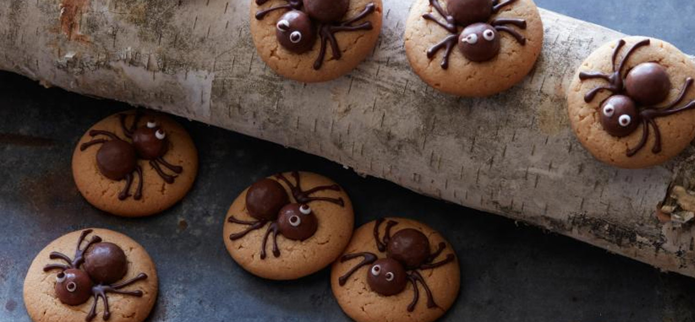
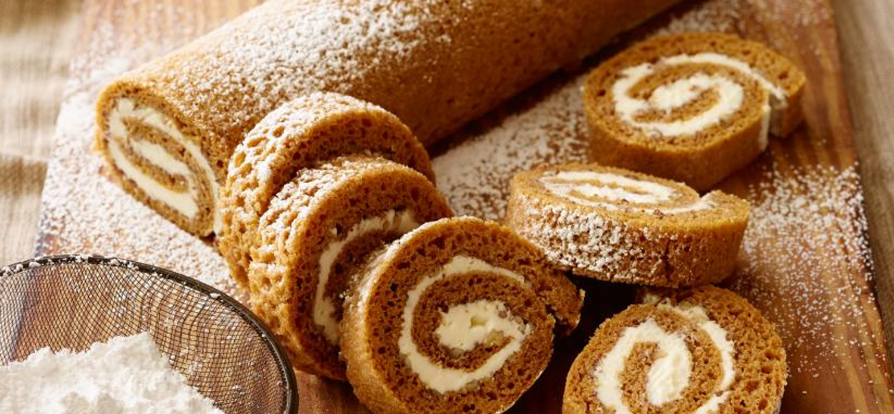
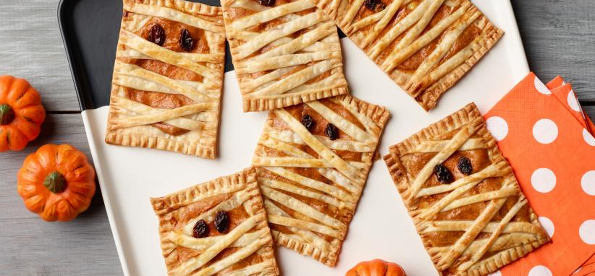

These spooky spider cookies are entertaining for little ones and adults to make together. From pushing chocolate candies into warm cookies, to drawing spider legs with chocolate and making silly eyes, there's plenty of fun for everyone.
Pumpkin Rolls
Make a batch of Ree's fall-inspired cinnamon rolls for brunch this weekend, or as a welcome-home snack for your marauding trick-or-treaters.
Mummy Pies
This easy, Halloween-inspired recipe can be made ahead and served later as a scary-good party dessert.

Peanut Butter Spider Cookies
Ingredients:
One 5-ounce box small ball-shaped chocolates, such as malted milk balls
3/4 cup all-purpose flour
1/4 teaspoon baking soda
Pinch of fine salt
1/2 cup granulated sugar
4 tablespoons unsalted butter, at room temperature
1/2 teaspoon pure vanilla extract
1 large egg
1/2 cup smooth peanut butter
2 ounces semisweet chocolate
1 small tube white cake decorating gel
Directions:
1. Position oven racks in the top and bottom thirds of the oven and preheat to 375 degrees fahrenheit. Line 2 baking sheets with parchment paper.
2. Separate the chocolate candy balls into larger and smaller balls. The larger balls will make up the spider bodies and the smaller balls the heads.
3. Whisk together the flour, baking soda and salt in a small bowl. Cream the sugar and butter in a medium bowl with an electric mixer on medium-high speed until light and fluffy, 3 to 4 minutes. Add the vanilla and egg and mix until thoroughly combined, about 1 minute. Add the peanut butter and mix until creamy, about 1 minute. Turn the mixer speed down to low and add half of the flour mixture. Beat on medium until incorporated, then turn the speed down to low again and add the rest of the flour mixture. Beat on medium until incorporated.
4. Roll the dough by hand into 1-inch balls, place about 1 inch apart on the prepared baking sheets and bake, rotating the pans halfway through, until the cookies are light golden brown and have spread to about 2 incheswide, about 16 minutes. The cookies are done when they smell very peanut buttery and the tops feel dry and slightly firm when pressed with fingers.
5. Meanwhile, melt the chocolate over a double boiler. Remove from the heat and let cool briefly so that it is slightly thickened but still pipeable.
6. When the cookies are done, remove them from the oven and transfer them to a cooling rack. Immediately push 2 chocolate candies directly into each hot cookies, putting a smaller chocolate ball toward the edge of the cookie and a larger chocolate ball directly behind it in the center of the cookie.
7. When the melted chocolate has thickened slightly, put it into a plastic bag and cut a small hole in the corner to create a piping bag. Pipe 8 legs on each cookie, starting from the point where the 2 chocolate candies meet. Pipe the front 4 legs so that they curve up toward the head and the back 4 legs so that they curve backward beyond the body. Reserve the remaining chocolate in the piping bag for the pupils of the eyes.
8.To make eyes, pipe two 1/4-inch circles on the "heads" of each spider with the cake decorating gel. Pipe a tiny dot of the reserved melted chocolate in the center of each to make the pupils.

Pumpkin Rolls
Ingredients:
1 stick butter (1/2 cup), room temperature
1/2 teaspoon vanilla extract
3 large eggs
1 cup granulated sugar
2/3 cup canned pumpkin
1 teaspoon lemon juice
3/4 cup all-purpose flour
1 teaspoon ground ginger
1/2 teaspoon salt
1 teaspoon baking powder
2 teaspoons ground cinnamon
1 cup pecans, finely chopped
1 cup confectioners' sugar, plus more for sprinkling
Directions:
Preheat the oven to 350 degrees F. Grease and flour a 17 1/2- by 12 1/2-inch jellyroll pan. With an electric mixer, beat the eggs, granulated sugar, pumpkin and lemon juice until smooth. Sift together the flour, ginger, salt, baking powder and cinnamon. Add the sifted ingredients to the egg mixture and blend until fully combined. Spread the batter in the jellyroll pan. Sprinkle the dough with the chopped pecans. Bake until a cake tester inserted in the center comes out clean, 14 minutes. Let the cake cool in the pan for 5 minutes. Invert the cake onto a wire rack. Sprinkle some of the confectioner' sugar on a large tea towel and carefully transfer the warm cake to the towel, folding the sides of the towel over the cake. Roll the cake up in the towel and cool in the refrigerator thoroughly for about 45 minutes. With an electric mixer, combine the confectioners' sugar, cream cheese, butter and vanilla and beat until smooth. Carefully unroll the cooled cake and spread the mixture on top of the cake. Gently re-roll the cake up and refrigerate it until you're ready to slice and serve. Dust with confectioners' sugar just before serving.

Mummy Pies
Ingredients:
1/4 cup canned pumpkin
2 tablespoons sweetened condensed milk
1/4 teaspoon ground cinnamon
1/4 teaspoon ground ginger
1/4 teaspoon ground nutmeg
Kosher salt
2 refrigerated pie crusts, thawed if frozen
All-purpose flour, for dusting
1 large egg
12 raisins
1/2 cup confectioners' sugar, optional
Directions:
1. Preheat the oven to 350 degrees F.
2. Add the pumpkin, sweetened condensed milk, cinnamon, ginger, nutmeg and a pinch of salt to a medium bowl and stir to combine.
3. Roll out 1 pie crust on a lightly floured surface with a rolling pin to form a rectangle about 9 inches by 12 inches. Square off the crust with a knife, reserving the scraps for decorating. Cut the pie crust into 6 equal rectangles, each about 3 inches by 6 inches. Transfer to a parchment-lined baking sheet.
4. Roll out the other pie crust to the same thickness as the first. Cut into thin strips about 1/4 inch wide and 7 inches long. Repeat with the reserved dough scraps. Transfer the strips to a parchment-lined baking sheet.
5. Add 1 heaping tablespoon of the filling to the center of each rectangular crust. Use the back of a spoon to spread out the filling, leaving about a 1/2-inch border around the edges.
6. Lightly beat the egg with 1 tablespoon water in a small bowl. Use a pastry brush to brush the edges of the pies with the egg wash. Layer the strips of dough, varying the angle of each strip to create a "mummy" look. Seal the edges with a fork and use a paring knife to trim the overhang. Lightly brush the tops of the hand pies with the egg wash. Add 2 raisins to each hand pie for the eyes.
7. Bake, rotating the pan halfway through for even color, until golden brown, 20 to 25 minutes. Cool on a baking rack slightly, about 5 minutes.
8. Serve as is or decorate with a simple icing. Combine the confectioners' sugar in a small bowl with 1/2 teaspoon water. Stir until smooth and glossy. Transfer the icing to a resealable plastic bag and snip off the corner. Pipe the icing onto the hand pies using the stripes of pie crust as a guide. Serve.